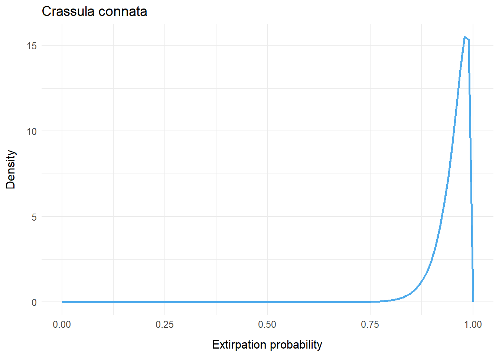

Example II
This map shows the accumulated search effort for Crassula connata over its historical habitat covering 10 grid cells in Bellhouse Park:
cracon_agm <- read.csv("Analysis_outputs/Intermediate/Crassula connata_accepted_grouped_merged.csv")
cracon_historical <- cracon_agm %>% dplyr::filter(assigned_community == 44)
cracon_sf = assign_cell_geometry_sf(cracon_historical, galgrid)
pal <- colorNumeric(palette = "viridis", domain = range(c(0, cracon_sf$search_effort), na.rm = TRUE))
m <- leaflet(data = cracon_sf) %>%
# Add a Tiles layer to the map
addProviderTiles("Esri.WorldImagery") %>%
# Add the grid layer to the map
addPolygons(fillColor = ~pal(search_effort), fillOpacity = 0.8,
color = "#BDBDC3", weight = 1) %>%
# Add a legend
addLegend(pal = pal, values = c(0, max(cracon_sf$search_effort, na.rm = TRUE)),
opacity = 0.8, title = "Accumulated Search Effort in ks")
# Print the map
mThe table that this plot is generated from is in the AGM (accepted, grouped, merged) format, output by the data pipeline which aggregates search trace data, grids it into cells and intersects it with habitat polygons. Here is the data covering the 6 Bellhouse Park cells:
This data format is explained in the previous example
This produces posterior regional statistics for extirpation in historical habitat as follows:
target_stats <- read.csv("Analysis_outputs/Intermediate/Crassula connata_stats.csv")
target_stats_historical <- target_stats %>% dplyr::filter(Population == 44)
paged_table(target_stats_historical)These show the computed parameters of the posterior beta distribution for extirpation expressed in two different forms - the standard (alpha, beta) representation and (mu, var) as parameters for the central estimate for sighting probability and its dispersion. Confidence bands are placed for this at [90.4%, 100.0%].
Here is this posterior distribution graphed out:
